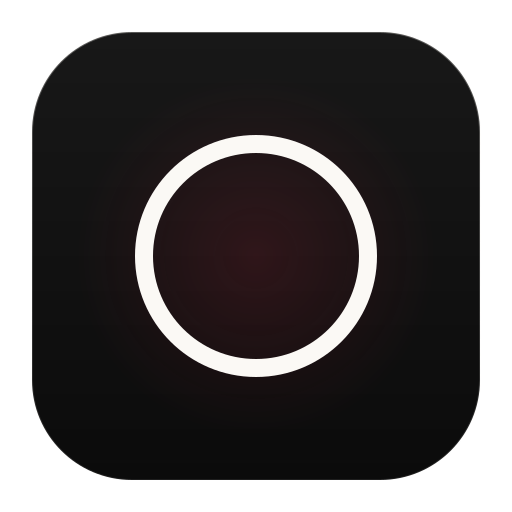

Área PULSO · contexto canônico
o centro de referência e decisões da infraestrutura.
da camada autoral ao motor soberano Gecko/Firefox sob a gramática da PULSO LIVE.
presença antes de chrome. sem dashboard de atalhos nem poluição visual.
o centro de referência e decisões da infraestrutura.
A web é matéria dentro de uma relação contínua com Área, Sessão, Lótus e MESA. Página e aba não governam a experiência; contexto e intenção governam.
O topo do navegador tradicional foi projetado na década de 1990 para alternar documentos estáticos. Com o tempo, acumulou abas horizontais, favoritos, extensões, barras de pesquisa e avisos que destroem o campo de atenção do autor.
No PULSO Browser, a estrutura é invertida: a navegação é lateral, contextual e silenciosa. O motor Gecko assegura privacidade e compatibilidade web, enquanto a camada autoral PULSO garante que fe permaneça no centro de suas criações.
Permanência sem grade de favoritos decorativa.
Páginas temporárias de pesquisa com agrupamento por intenção.
Arquivo contextual preservado para consulta contínua, não histórico bruto de URLs.
Análise comparativa da estrutura lateral de navegação.
Documentação das APIs de renderização e janelas.
A MESA abre ao lado da web em uma superfície translúcida com backdrop blur para acolher documentos densos sem destruir o contexto.
Leitura realista acompanhada pela presença da Lótus em painel de vidro translúcido.
Sem modal genérico central bloqueando o fluxo de trabalho.
a matéria local e a MESA permanecem consultáveis offline.
Ícone institucional do PULSO Browser (`○`) separado da presença viva da Lótus (`⊙`).

ícone de aplicativo macOS (glifo ○)Inventário completo da gramática visual portada da PULSO LIVE.
fontes organizadas na MESA com resposta carmim.